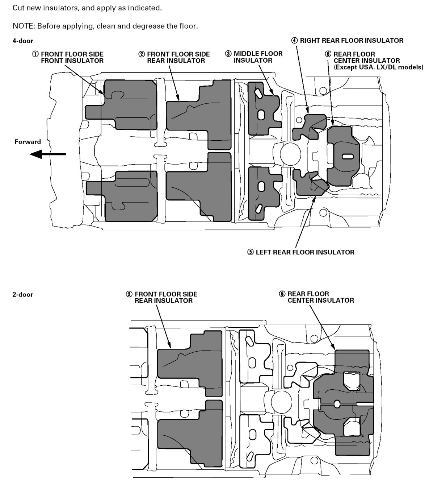
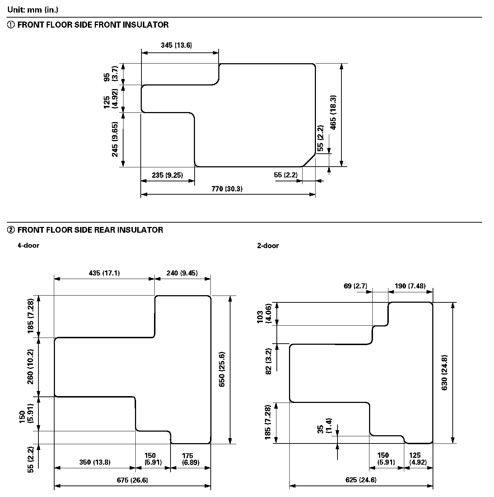
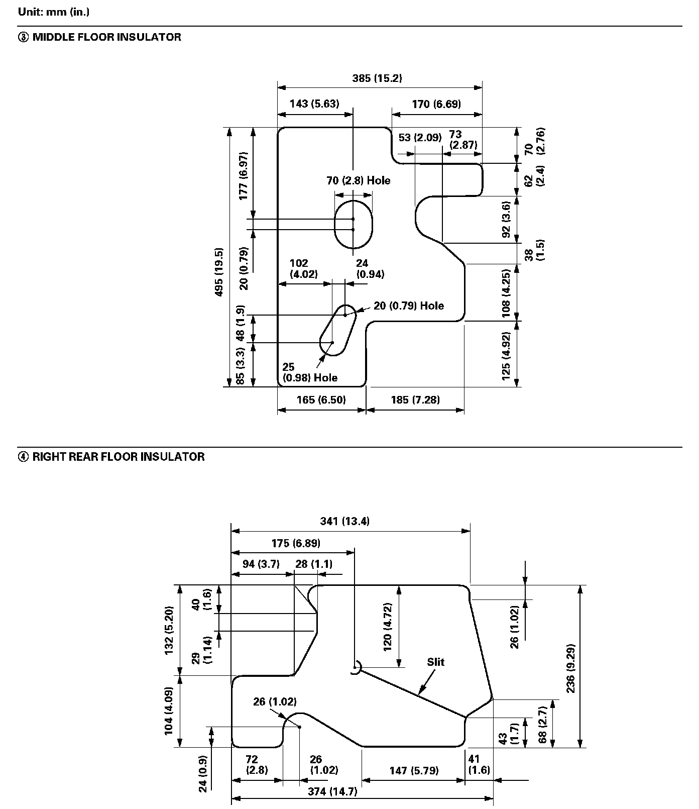
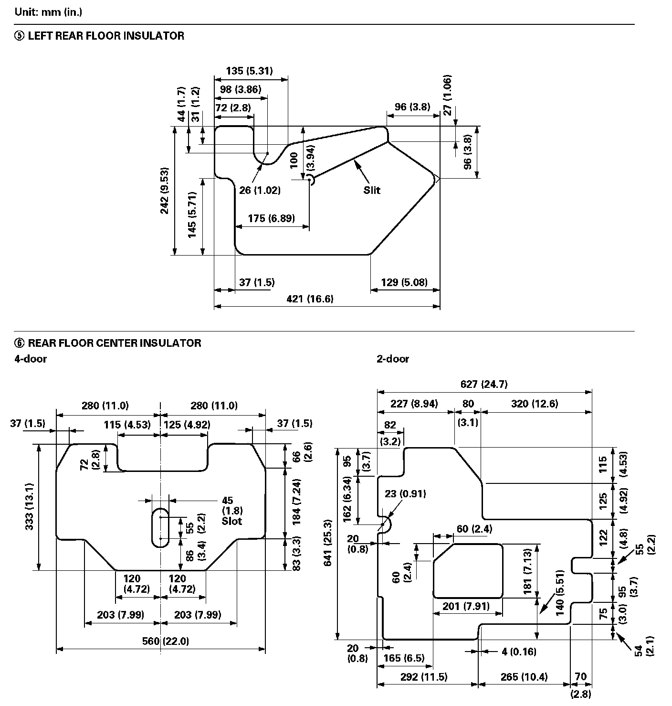

Operation CHARM
: Car repair manuals for everyone.
Home
>>
Honda
>>
2007
>>
Civic Si L4-2.0L
>>
Repair and Diagnosis
>>
Body and Frame
>>
Sound Proofing / Insulation
>>
Locations
Sound Proofing / Insulation: Locations
Insulator Locations:

Insulator Sizes (Part 1):

Insulator Sizes (Part 2):

Insulator Sizes (Part 3):
